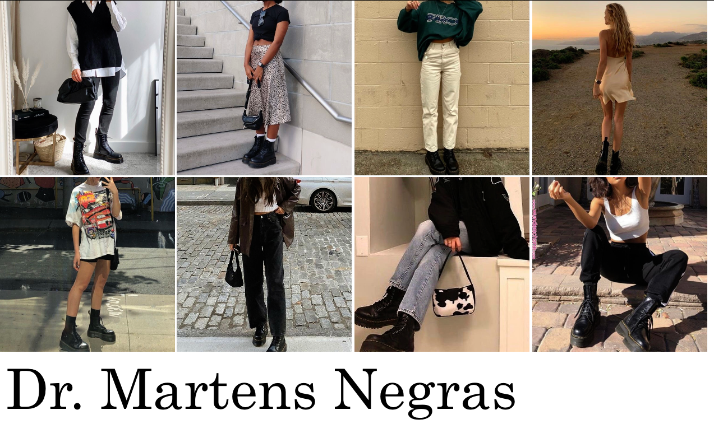
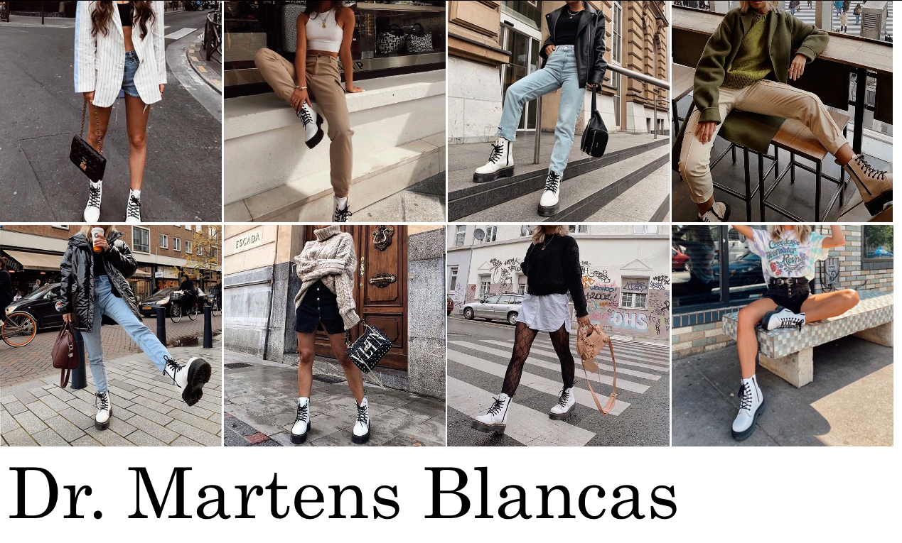

¡Estas botas quedan bien con básicamente todo! Puedes estilizarlas para un look cómodo/casual con unos pants o jeans, agregándole alguna playera, sudadera, etc. Igualmente para un look mas arreglado, puedes usarlas con faldas o algun vestido. ¡Son bastante fáciles de combinar!
 